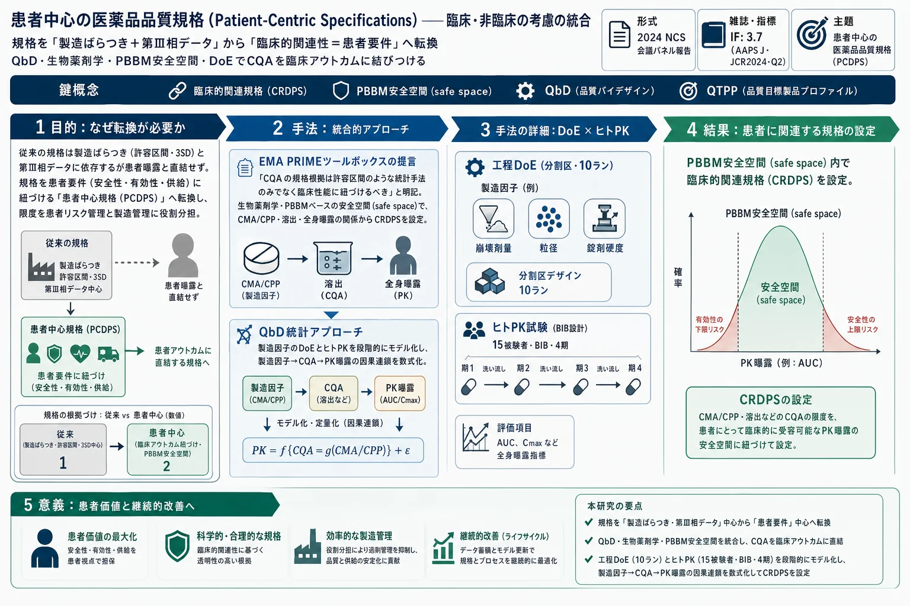

患者中心の医薬品品質規格（Patient-Centric Specifications）——臨床・非臨床の考慮の統合（AAPS会議報告）

<!-- Altan S, Coppenolle H, Kvist T, Reckermann K, Suarez-Sharp S, Schofield T. Patient-Centric Drug Product Quality Specifications: a Convergence of Clinical and Nonclinical Considerations. The AAPS Journal 2025;27:159. doi:10.1208/s12248-025-01141-7 の全訳密度日本語版。 -->
補足（本サイトでの位置づけ）: 本論文は生薬・漢方の研究ではなく、医薬品の「規格（spec）」の考え方を根本から問い直す製薬レギュラトリー／統計の会議報告である。ただし当サイトが扱う漢方・生薬 QC でも「品質規格をどう決めるか」は中心課題で、本報告の核心的な問い——「規格の限度を、過去の製造ばらつきから機械的に決めるのでなく、患者にとって本当に意味のある範囲（臨床的関連性）に紐づけるべきだ」——は、生薬製剤の規格設定にもそのまま効く。とくに①規格は顧客（患者）要件を表すという原則、②QbD のデザインスペースを臨床アウトカムまで拡張する発想、③PBBM ベースの「安全空間（safe space）」で溶出と全身曝露を結ぶ、④DoE とヒト PK 試験を組み合わせて「製造因子→CQA→曝露」の因果連鎖を数式化する統計手法、は、当サイトの QbD・実験計画法・規格（USP/AOAC）・許容区間の論文群と地続き。直前に扱った「許容区間による規格限度設定」（Montes 2024）が統計手法そのものだったのに対し、本報告はその手法を臨床的関連性の文脈に位置づけ直す上位のフレームを与える。生薬の品質規格を「なぜその値か」まで含めて考えるための視座を提供する。
書誌情報
- 原題: Patient-Centric Drug Product Quality Specifications: a Convergence of Clinical and Nonclinical Considerations
- 和題（本稿）: 患者中心の医薬品品質規格——臨床・非臨床の考慮の統合
- 著者: Stan Altan（J&J Innovative Medicine）, Hans Coppenolle（Janssen R&D）, Trine Kvist（Novo Nordisk）, Katharina Reckermann（Roche Diagnostics）, Sandra Suarez-Sharp（Simulations Plus）, Timothy Schofield（責任著者・退職）
- 責任著者: T. Schofield（timothylschofield@gmail.com）
- 掲載誌: The AAPS Journal 2025; 27: 159（Meeting Report）
- DOI: 10.1208/s12248-025-01141-7
- 受理経緯: 2025年5月24日受付 / 2025年9月9日受理 / 2025年10月13日オンライン公開
- © The Author(s)、米国薬学者協会（AAPS）2025
- キーワード: 患者中心（patient centric）／品質特性（quality attributes）／Quality by Design（QbD）／規格（specifications）
- 背景: 2024年 NCS 会議（2024年9月26日、ドイツ・ヴィースバーデン）の特別パネルセッションに基づく
- 雑誌インパクトファクター: 3.7（The AAPS Journal・JCR2024・Q2。ただし AAPS 学会は5.0と公表しており差異あり・要確認）
要旨（Abstract）
2024年 NCS 会議（ドイツ・ヴィースバーデン）の特別パネルセッションで、専門家が集まり、患者中心の医薬品開発・規格の進化する状況を探究した。従来の規格はしばしば製造ばらつきと第III相臨床試験データに依存する。しかし患者中心規格は焦点を 直接的な臨床的関連性 に移し、顧客主導の許容基準を確立する。議論では、事前知識・生物薬剤学・製剤科学・規制当局の意見・統計手法を活用した患者中心規格の定義への革新的アプローチを扱った。セッションはまた、重要工程パラメータ（CPP）・重要材料特性（CMA）を CMC の重要品質特性（CQA）に結びつける効率的な QbD 研究も強調した。これらのアプローチは大きな有望性をもつが、学際的協働・データ統合・将来の医薬品・バイオ医薬品開発に資する堅牢なデータベースの構築といった課題が残る。業界の経験が蓄積されるにつれ、これらの取り組みが非臨床-臨床の連結設計の継続的改善への道を開き、患者アウトカムを向上させる。
導入（Introduction）
本稿の著者らは、2024年 NCS 会議の特別パネル「患者中心の医薬品品質規格：臨床・非臨床の考慮の統合」の講演者である。患者中心規格は、2016年の Cures Act 法制定以降、過去10年で注目を集めてきた。この法は患者重視の視点で医薬品・バイオ医薬品開発の近代化を加速することを意図し、複数の FDA 臨床ガイダンスを生んだ。CMC の品質への含意も臨床開発とともに進化してきた。「患者中心規格（patient-centric specifications）」および以前の用語「臨床的関連規格（clinically relevant specifications）」の両方が文献で報告されている。
ICH Q6A・Q6B の「規格（specification）」の定義 は、製造業者が提案・正当化し規制当局が承認する「重要品質標準（critical quality standard）」と同定される[1, 2]。規格は3要素からなる：1. 試験、2. 分析手順、3. 許容基準（記述した試験の数値限度・範囲等）。小分子の単一 CQA の規格要素の例：1. 総不純物、2. クロマトグラフィー、3. 0.8%(w/w) 以下。
従来、製品品質は分析測定データで捉えられ、範囲はしばしば 許容区間（tolerance intervals）（製造ロットの測定値の高被覆範囲）から導かれた。しかしこれら測定値の範囲は、多くの場合、患者の曝露と直接対応しない。患者はバッチ由来の投与単位サンプルの真の含量・特性を経験する。投与単位の真の含量・特性は、その分析測定値と同じではない。統計的には、これは品質の考慮がある パラメータ空間 と、測定がある データ空間 の区別として理解できる。
本報告の各パネリストが患者中心医薬品規格（PCDPS）への見解をまとめる。議論を駆動する基本原則は「規格は顧客要件に対応することを意図する」（モデリング・実験的アプローチによる）。意図は CQA を臨床アウトカムや代理指標に結びつけ、その過程で製造ばらつきに基づく統計限度の計算を「製造の一貫性を管理する」本来の役割に置くこと。以下、前半3節が「なぜ」患者中心規格へ移るべきか、後半2節が「どう」達成するかを論じる。
患者中心の製品品質規格達成のための考慮（Schofield）
多くの産業で規格は顧客要件を表す。製薬・バイオ医薬品でこの原則に従えば、規格は製品の 安全性・有効性・供給可能性 に関わるべき[3–5]。しかし、製品の臨床的有用性と、製造工程・製剤・分析ツールを結びつけて CMC 品質特性と臨床アウトカムのリンクを開発する努力は、ほとんど統合されてこなかった。結果として、製造ばらつきに基づく品質管理が、明確な製品品質の定義でなく製品の一貫性管理に使われる。最終結果はしばしば、企業が製品逸脱（OOS・OOT）に永遠に対応し続ける 制限的な管理戦略 となる。
過去の製造ばらつきに基づく限度は、許容できる患者アウトカムを生むと予測される範囲より狭いことがある。この場合、品質特性を限られた範囲（見えた範囲）内に留めることを要求してイノベーションが妨げられうる一方、その範囲外の結果はより広い臨床経験（必要な範囲）に基づき正当化できるかもしれない。製造が進み工程改善がなされると、ロット出荷・製造変更は、より広く意味のある製品品質の定義で促進される。
CMC 統計家は数十年 QbD を聞いてきた。QbD はリスクベースで品質を構築・維持することを求める。多くの CMC 統計家は、研究設計でリスクを管理するのでなく、工程の出力（3シグマ・許容区間）や研究のアウトカム（p 値）を記述するためにデータを解析する。通常欠けているのは、設計を促進する 意味のある許容基準または対立仮説 である。許容基準が製造データから計算されると、その基準を扱う研究は患者要件でなく典型的な製造ばらつきを標的にしてしまう。
品質管理における限度の用途（Fig. 1・2・3）
「限度は何に使うのか」を問い直せる（原著 Fig. 1）：
- 患者要件（実線） が製品の品質を定義。事前知識と、CMC・前臨床・臨床開発の協調的努力から得られる。
- 患者中心規格（破線） は安定性・分析研究の情報から導け、出荷時と有効期間を通じてロットが患者要件内に収まることを（例：95%信頼度で）保証する許容基準を表す。これが患者リスクに焦点を当てた 品質管理（quality control） を構成。
- これとは独立に、管理限度（control limits、点線） は製造ロットの出荷測定から計算され、製造管理（manufacturing control） の基盤となる。出荷限度と管理限度の間の領域は、生産をモニタリング（継続的工程検証・工程能力分析）し工程・分析変更に対応する研究（同等性研究）を設計するライフサイクル管理に使える。
限度間のセグメントは 予算（budget） に分割できる（原著 Fig. 2）。患者要件が全体の「CMC 予算」を枠づけ、工程・製剤・分析の各予算が開発を駆動し、商用規格の早期（後期でなく）開発 を要求する。これらは 品質目標製品プロファイル（QTPP） で規定され、商用要件（有効期間・市場需要予測）と類似工程・製剤・分析手順の事前知識を組み合わせる。堅牢な製造・管理を支える目標範囲の早期予測が開発を導き、製造限度の決定を最終工程・分析法の十分な経験後まで後回しにできる。
分野横断の協働（Fig. 3）
これは開発・製造・規制機能の協働的努力（原著 Fig. 3）。中心目標は製品の安全性・有効性の確保。探索では代理マーカーが開発され、前臨床・臨床組織が動物・ヒト試験でトランスレーショナル医学・実世界エビデンス・臨床薬理を行い、患者要件を正当化。CMC 統計家は製薬科学者と協働して製品・管理戦略を開発し、製造・品質管理内で品質製品を患者に供給。規制科学者はグローバル規制当局と関与して相互に有益な期待を開発する。
患者中心規格達成の課題と便益（Reckermann）
歴史的に、バイオ医薬品の規格設定は主に製造経験に焦点を当て、工程ばらつき（許容区間・3標準偏差 3SD 範囲）に依存して許容基準を決めてきた。しかし規制当局は臨床データと商用製品の CMC CQA データの結びつきを問うてきた。進化する規制見解の例は EMA PRIME ツールボックスガイダンス 4.4.3 節：「CQA の規格限度の正当化は、許容区間のような統計手法のみから導くのでなく、臨床性能に紐づけるべき」[6]。並行して業界の科学者もこのリンクの便益を認識し、データセット接続の努力が優先され、ダッシュボードが作られた[7]。ダッシュボードを通じて特定 CQA を意味ある臨床アウトカムに結びつけ、臨床的に関連する許容基準を同定できる。高い CQA 水準のロットが臨床試験に含まれ有害事象がなければ、範囲を広げても患者での安全使用を予測できるという議論の基盤になる。
残る課題:
- 2つの事業目標の対立 — CQA のばらつきを最小化する堅牢な工程開発の必要性と、固有の工程ばらつきの現実的な見方を得る必要性が対立。後者は将来工程を代表する材料の臨床使用を示唆。主課題は、販売承認申請時に完全には特性評価されていない CQA のばらつきを考慮すること。
- 分析法が経時変化 し、異なる開発・商用化期間（探索・臨床相・商用・技術革新）でデータをリンクしにくい。
克服後の便益:
- 患者リスク管理の改善 — 重要な患者アウトカムをよりよく制御。
- 生産者リスク管理の強化 — 良品ロットの不要な廃棄を最小化。
- QbD ツールの強化 — CPP 定義・デザインスペースの許容基準設定、分析法の真度・精度の許容基準設定を支援。
規格正当化の現状と将来（Kvist）
規格正当化の現状（とくにバイオ医薬品）は、次の1つ以上に基づく：1. 規制ガイダンス、2. 第III相試験に含まれるバッチの製造ばらつき（と安定性データ）、3. 臨床試験での曝露、4. 事前知識（類似製品や、異なる含量/製剤の同一製品のデータ）。品質特性により強調点は変わるが、通常は製造ばらつきと曝露が正当化の重要部分を占める。
統計家はしばしば綱引きに巻き込まれる。一方は「当局と良好な関係と迅速な承認を望む＝安全で現実的な、広すぎない限度」、他方は「規格外リスクの低い製造を望む＝安全で現実的な、狭すぎない限度」。統計家の適切な役割は、どちらにも与せず、良い意思決定のためのリスク計算とデータに基づく情報を提供すること。
今後、製造ばらつきの過度な強調 には明確な文脈が必要。主問題は、製造ばらつき評価用バッチが通常、日常商用生産の将来ばらつきを反映しないこと（規制申請時、限られた数のバッチが短期間・キャンペーンで生産されるため）。これらのデータのばらつきに基づく限度は非現実的になりうる。多数の品質特性（しばしば互いに完全に独立でない15特性）を含むと、多重性（multiplicity） による規格外リスクが極めて高くなる。限られたデータに依存すると不必要にきつい限度のリスクを招き、企業資源の最適でない配分につながる。資源は、工程改善と患者への一貫供給を可能にする関連限度に集中する方がよい。
段階的に患者中心規格へ移り、事前知識や in vivo/in vitro モデルなど他の論拠へ強調を移すのが望ましい。ただし一部の品質特性（例：不純物カテゴリ）は製造ばらつきに依存し続ける。その場合でも、将来の製造ばらつきをよりよく誘発する方法（例：工程バリデーション段階2・3で異なる出発材料バッチ・キャンペーンを使う[8]、DoE で溶出・力価などの品質特性のばらつきを誘発する〈次節〉）が有用。
臨床的関連医薬品規格（CRDPS）——患者中心開発の礎（Suarez-Sharp）
過去12〜15年、米国 FDA は 臨床的関連医薬品規格（Clinically Relevant Drug Product Specifications, CRDPS） の確立を、製品品質向上と患者中心開発の広範な取り組みの一環として推進してきた。これは 患者中心医薬品開発（PCDPD） の包括目標——患者視点を開発と FDA の新薬評価に組み込む——と整合する。
生物薬剤学・CMC の観点から、PCDPD は、臨床的に意味のある in vitro/in vivo 試験に直接紐づく科学・リスクベースの製品規格・工程内管理・管理戦略の開発で達成される。中心は CRDPS の確立で、安全空間（safe space）——製品品質特性が臨床アウトカムと整合することを保証する枠組み——の同定で支えられる[9, 10]。
従来、業界は QbD 等で工程・製品理解を高めてきたが、これらは品質ベースのリスク評価・管理に焦点を当て、しばしば 臨床的関連性を欠く。例：in vitro 溶出試験は CMA・CPP の同定と規格定義に一般的に使われるが、臨床アウトカムへの影響を十分考慮せず規格範囲を設定し、過度に広い/不必要にきつい/臨床的に無関係な規格を生みうる。この乖離は、製品が品質要件を満たしても患者に重大な安全性・有効性リスクをもたらしうる。
CRDPS の実装
CRDPS は品質特性と臨床アウトカムの接続を確立し、製造・規制（バイオウェーバー）の柔軟性を許しつつ一貫した製品品質・有効性・安全性を確保する[1, 11]。生物薬剤学ツールが要となる学際的アプローチを要し、薬物の CMC CQA と臨床性能（Cmax・AUC などの全身曝露指標）を結ぶ重要なリンクを作る。QbD 原則が DoE でデザインスペース・製造管理・管理戦略を定義してこれを支援。モデリング・シミュレーションで特性評価した 生物予測的溶出法（biopredictive dissolution） が、DoE 研究に統合されると医薬品開発で重要な役割を果たし、機序理解を高め、追加の生物学的利用能（BA）・生物学的同等性（BE）研究への依存を減らす[10]。
CRDPS 設定（とくに溶出規格）のアプローチは多様。低リスク薬（BCS クラス1/3・速溶出）では臨床的関連性がしばしば広範な証拠なしに仮定される。高リスク薬（BCS クラス2/4・放出調節製剤）では臨床的関連で判別力のある溶出法の開発が重要。PBBM（生理学的ベース生物薬剤学モデル）ベースの安全空間の採用が勢いを増し[1, 12–21]、CRDPS 確立の合理化・開発の迅速化・規制申請支援の堅牢な科学的枠組みを提供する。
PBBM ベースの安全空間の役割（Fig. 4）
安全空間は PCDPD の中心で、製造・規制の柔軟性を得るための臨床的関連規格の確立を可能にする。CMA・CPP・溶出・全身曝露の関係の理解から導かれる。安全空間は通常、ブラケッティング（bracketing）アプローチで in vitro-in vivo 関係（IVIVR）・相関（IVIVC）を通じて定義される。ランク順関係を示す製剤変種で、製品変更が生物学的同等となる境界を同定する[11]。安全空間は規制の柔軟性を促進し、大きな製造変更時の追加臨床試験の必要を減らす[12, 18]。
PBBM は、CRDPS を含む製品品質主張を支える IVIVR/IVIVC を確立する適合目的（fit-for-purpose）アプローチを提供。鍵となる利点は、特定原薬について各種剤形で生成された データの全体性（CMC・生物薬剤学・臨床薬理データ） を活用できること。物理化学的性質・in vitro 特性評価・臨床アウトカム・適合目的データ（標的製剤周辺の製剤変種の溶出・PK データ）をプールして科学的に根拠づけられた安全空間を構築（原著 Fig. 4）。PBBM は IVIVC の構築に限定されず、とくに IVIVC の成功率が低い IR（即放性）製剤でバイオウェーバーへのより簡単な道を提供する利点がある。
患者中心規格を促進する QbD 統計アプローチ（Coppenolle & Altan）
医薬品開発は分子探索から最終製品の商用化までの段階的過程で、各相に臨床・非臨床の目的がある。本節は実験計画概念の適用で臨床・非臨床研究情報を戦略的に整合させ、臨床性能の観点から製造品質を論じる。このアプローチは ICH Q8 の「製品性能の理解を高める」ビジョン[22]を、品質特性を臨床/代理アウトカムに関係づける形に拡張する潜在力をもつ。
製造工程の簡略表現（原著 Fig. 5）：原料を入力、医薬品を出力とする系。工程変数を目標値に固定して制御。環境変数も影響するが制御が難しい。最終製品の CQA（溶出・含量均一性・力価）は測定アウトカムで、望ましい品質を確保する許容基準に適合する必要がある。品質基準への適合は、工程変数を最適設定に固定し環境変数を制御して達成できる。QbD は科学・リスクベースで将来の工程変更も考慮するよう促す。研究は通常3ステップ（実験計画・統計モデリング・デザインスペース構築）からなり、CQA 群の規格を満たす確率が許容できる領域を定義することが関心。
もう一つの製品理解の要素は 患者へのリンク。CQA と in vivo 性能指標（第III相データ・IVIVC モデリング・多コンパートメントモデル）の関係の理解が求められる。製造と臨床情報を結ぶアプローチはしばしば理想的実験空間の一部に限られ、データ不足で不確実性が大きく、制御可能な工程因子へのリンクが不明瞭になる。本節は、制御可能な工程変数・材料特性 → CQA 測定 → 臨床性能指標 の因果連鎖を構築することを提案。統計モデリングでモデルパラメータのレベルで作動するリンクを構築し、データ収集過程の固有ランダム変動を考慮する。
DoE でヒト PK アウトカムに製造因子を結ぶ実例（Tables 1・2）
原著 Table 1 は3研究因子（崩壊剤量・粒径・錠剤硬度）の設計。崩壊剤量・粒径の制限ランダム化により錠剤硬度が 分割区（split plot）因子 となる。崩壊剤量×粒径の4組合せ×錠剤硬度2水準＋中心点2ラン＝計10ラン。溶出・他の錠剤特性をアウトカムとして測定。分析作業の設計は、工程と分析のばらつき源を部分的に直交化して分離するため重要。
原著 Table 1：工程設計
| 設計点 | 崩壊剤量 | 粒径 | 錠剤硬度（低/高） |
|---|---|---|---|
| 1–2 | 低 | 低 | A / B |
| 3–4 | 低 | 高 | D / E |
| 5–6 | 高 | 低 | F / G |
| 7–8 | 高 | 高 | H / I |
| 9 | 中 | 中 | C1 |
| 10 | 中 | 中 | C2 |
10組合せをヒト被験者で試験（原著 Table 2）。10処方のうち4処方を被験者ごとに4期で試験する 均衡不完備ブロック設計（BIB）。計15被験者で、期・被験者ばらつきを処置から分離できる。PK 応答は AUC・Cmax・Tmax。
原著 Table 2：ヒト PK 試験設計（BIB・10処方・15被験者・4期、抜粋）
| 被験者 | 期1 | 期2 | 期3 | 期4 |
|---|---|---|---|---|
| 1 | E | I | A | G |
| 2 | C1 | E | A | D |
| 3 | I | G | D | B |
| … | … | … | … | … |
| 15 | I | C2 | H | E |
工程データとヒト PK データを第1段階で別々に解析。工程応答の 最小二乗平均（LSMeans） を分析的寄与を制御しつつ推定、PK 応答の LSMeans を期効果・被験者ばらつきを制御しつつ推定。次に PK パラメータ・溶出・他の錠剤特性の LSMeans を工程因子の多変量関数としてモデル化。最終成果物は 製造因子を CQA と被験者 PK 曝露に結ぶ数学的関係。
この例は、小さく効率的な統計設計で患者中心規格に情報を与える包括的アプローチを示す。必要な情報量は事前知識に依存し、プラットフォームの理解が進むほど追加実験は減り、極端には実験でなく検証に帰着する。
結論（Conclusions）
患者中心医薬品規格への移行は、従来の製造限度より臨床的関連性を優先する変革的変化である。生物薬剤学・QbD 原則・先進モデリングツール（PBBM）・協働的ステークホルダー関与を統合することで、真に患者主導の許容基準を確立できる。学際協働・データ統合・堅牢な歴史的データベースの構築という課題は残るが克服不能ではない。PCDPS の長期便益（真の品質管理と偽陽性事象の低減、資源配分の最適化、開発の加速）は、製品開発・規制意思決定の本質的進化を意味する。
モデリング・QbD 研究・早期用量設定研究・（固形製剤の）溶出安全空間計算からの集合知が、CMC 品質特性と臨床アウトカムを結ぶ構造化された基盤を提供する。これが規制経路を合理化し、患者安全性・有効性を確保する。前臨床・臨床・CMC 統計家の役割がこのパラダイムシフトの推進に重要——医薬品規格が単に工程適合的でなく、患者中心の限度で意味ある開発・ライフサイクル管理研究を設計するために。CQA を臨床アウトカムに整合させ、生物薬剤学・QbD・先進モデリングを統合することで、業界は効率的に患者中心規格を確立できる。
略号
AUC＝曲線下面積、BA＝生物学的利用能、BE＝生物学的同等性、BCS＝生物薬剤学分類システム、CMA＝重要材料特性、Cmax＝最高濃度、CPP＝重要工程パラメータ、CQA＝重要品質特性、IVIVC＝in vitro-in vivo 相関、IVIVR＝in vitro-in vivo 関係、CRDPS＝臨床的関連医薬品規格、OOS＝規格外、OOT＝トレンド外、PCDPD＝患者中心医薬品開発、PBBM＝生理学的ベース生物薬剤学モデル、QbD＝Quality by Design、QTPP＝品質目標製品プロファイル、SD＝標準偏差、BIB＝均衡不完備ブロック設計、LSMeans＝最小二乗平均。
主要参考文献（抜粋）
- [1] ICH Q6A: Specifications: test procedures and acceptance criteria for new drug substances and products—chemical substances. ICH, 1999.
- [2] ICH Q6B: Specifications for biotechnological/biological products. ICH, 1999.
- [4] Krause P, et al. A vision for patient-centric specifications for biologicals. Biologicals. 2024.
- [5] Schofield T. Facilitating quality by design through patient-centric specifications. Vaccine Insights. 2023;2(9):341-54.
- [6] EMA CHMP. PRIME Toolbox guidance（CQA 規格を臨床性能に紐づけるべき旨、4.4.3節）. 2019.
- [9] Abend A, et al. Dissolution and translational modeling strategies enabling patient-centric drug product development: M-CERSI workshop. AAPS J. 2018.
- [10] Heimbach T, et al. Dissolution and translational modeling strategies toward an in vitro-in vivo link. AAPS J. 2019;21(2):29.
- [16] Suarez-Sharp S, et al. Regulatory experience with IVIVC in NDAs. AAPS J. 2016;18(6):1379-90.
- [18] Heimbach T, et al. Establishing the bioequivalence safe space for IR oral dosage forms using PBBM. J Pharm Sci. 2021;110(11):3896-906.
- [22] ICH Q8(R2) Pharmaceutical Development. ICH, 2011.
（全22文献。詳細は原著参照。）